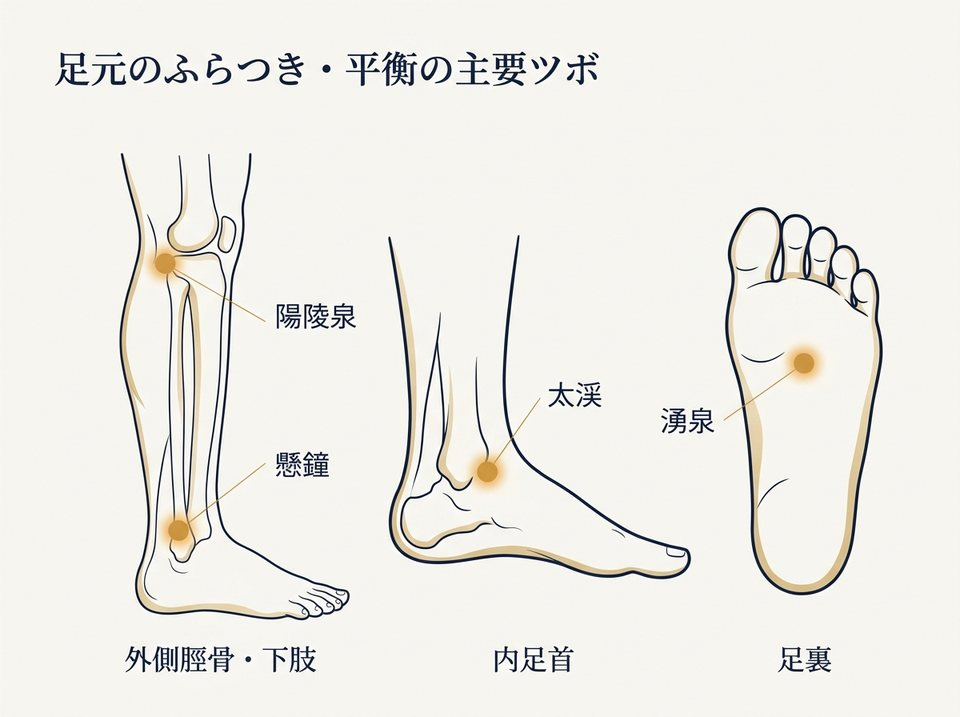

橈骨神経障害の鍼灸
上腕から前腕を通る橈骨神経が圧迫・損傷され、手首や指を反らせにくくなる下垂手や手の甲側のしびれを生じる神経障害です。


院長YouTube解説・関連動画
橈骨神経障害の原因は橈骨神経の圧迫や損傷
橈骨神経麻痺は、前述した通り、腕の付け根あたりから、親指と人差し指の先までを腕の骨に沿うように走る橈骨神経の圧迫や損傷によります。
橈骨神経は腕神経叢の分岐であり、腕神経叢は背中の脊髄神経から分岐し頭・首・上肢のうちに鎖骨・上腕・前腕・手へと伸びていきます。長期間、横向きに寝転んでいたりすると頭や首を含めた上肢が圧迫され、橈骨神経の麻痺が起こります。
骨折や手術、静脈注射や採血などで橈骨神経の損傷を起こす場合も稀にあります。
また、男性が女性に腕枕をすることで、橈骨神経が圧迫され麻痺されることを、サタデーナイト症候群といいます。
1. 外傷による損傷
橈骨神経は、肘の部分で皮膚に近く、骨に密着しているため、外傷に対して特に脆弱です。
a. 骨折や脱臼
肘や前腕の骨折や脱臼は、神経を挟み込むことがあります。
b. 刺傷や深い傷
鋭利な物による刺傷や深い傷も神経を損傷する可能性があります。
2. 圧迫による障害
a. 長時間の圧迫
肘をたたく椅子の背もたれに長時間寄りかかる、クラッチバッグのような重い物を肘にかけるなどが、橈骨神経の圧迫を引き起こすことがあります。
b. ギプスや包帯の過度な圧迫
骨折の時などで使用されるギプスや包帯が過度に締め付けられた場合、神経を圧迫することがある。
3. 病気による影響
a. 関節炎
リウマチなどの慢性関節炎が肘の周りの組織を腫らせると、橈骨神経に圧迫がかかることがある。
b. 腫瘍
神経を圧迫する腫瘍や異常な成長も、橈骨神経障害の原因になる可能性があります。
4. 手術や処置による障害
処置や手術中に橈骨神経が損傷される可能性があります。
5. 代謝性障害と全身性の病気
a. 糖尿病
糖尿病を発症している場合は神経障害のリスクが高く、橈骨神経も影響を受けることがあります。
b. アルコール障害
慢性的なアルコール摂取は、橈骨神経を含む神経系にダメージを与えることがある。
6. 遺伝的要因
一部の人々は遺伝的に橈骨神経障害になりやすい構造を持っている可能性があります。
7. アイドリングニューロパシー
特定の原因がなく突然発症することも稀にあります。
基本的には保険対象になります。橈骨神経麻痺を調べる方法は、神経に傷害が出ているところに触れる事で放散痛が生じ、部分の特定をする方法です。この場合、感覚機能が傷害されるために判断が可能です。
この麻痺の症状をより詳細に判断をするには、筋電図、レントゲン撮影、MRIなど、症状によっての調べるといいでしょう。様々な要因が考えられる為、これらを組み合わせる事で詳細が把握できます。
発症して間もない場合、改善に用いられる薬として有効なのが副腎皮質ステロイド薬やメチルコバラミン、ボルタレン、ロキソニンなど消炎鎮痛剤などです。
また、睡眠中の圧迫が原因の可能性があれば睡眠姿勢を変える必要性があります。
1. 保存的方法
最初の段階では、保存的方法が行われることが多いです。
a. 休息
休めることで、橈骨神経の圧迫や炎症が減少し、自然に改善することがあります。
b. スプリントや装具の使用
特殊な装具やスプリントを使用すると、橈骨神経が圧迫されるのを防ぐことができます。
c. リハビリテーション
リハビリテーションは、筋肉の強化、関節の可動域の改善、痛みの管理に役立ちます。
d. 薬
非ステロイド抗炎症薬（NSAIDs）などの薬を使用して炎症と痛みを管理することがあります。
2. 投射
a. コルチゾン注射
炎症を抑制するステロイド注射が橈骨神経周囲に投与されることがあります。
3. 手術
保存的方法が効果を示さない場合や神経障害が深刻な場合は、手術が必要になることがあります。
a. 神経減圧手術
橈骨神経の圧迫を取り除く手術で、痛みの軽減と感覚の回復を促進します。
b. 神経移植手術
橈骨神経が深刻に損傷している場合、他の部分から神経を移植する手術が考慮されることがあります。
4. 生活習慣の改善
a. 職場の改善
エルゴノミックな椅子やデスクの配置、休息時間の確保など、職場環境の改善が助けになることがあります。
b. 健康的なライフスタイル
全体的な健康の促進、適切な体重管理、栄養均衡の取れた食事なども治療の一部となることがあります。
5. 代替法
a. 鍼
一部でには鍼が効果的であると報告されています。
b. マッサージ
緊張を解きほぐし、血流を促進するマッサージも人によっては痛みの緩和に役立つこともあります。
橈骨神経障害は、手指や手首が伸ばしにくくなり、感覚が鈍くなったりしびれが起きるのが特徴です。この症状は多くの場合、約1ヵ月～3ヵ月で完全に回復に向かいます。
しかし、麻痺を繰り返す場合は神経周囲を包む「髄鞘」とゆう部分の構造異常の可能性もあります。長く続くようであれば専門機関へ相談しましょう。
橈骨神経障害の改善例
橈骨神経障害で鍼灸で改善を経験した改善例になります。
40歳の男性で、長時間のコンピュータ作業が原因で橈骨神経障害を発症。痛みとしびれがあり、握力が弱くなっていました。一般的な改善法である薬やリハビリテーションは効果が限定的だったため、鍼灸を行うことになりました。
腕と手の特定の部位を押して、痛みや感覚の変化を評価し橈骨神経の経路や関連する筋肉に対して、鍼灸を行う計画を立てました。症状のある部分の周辺の経穴に鍼を挿入し、橈骨神経の圧迫を和らげることを目指しました。さらに、全身のエネルギーの流れを整えるための鍼も配置しました。
b痛みのある部位や経路に沿って、お灸を焚いて温熱刺激を加えました。これによって血行を促進し、筋肉の緊張を和らげました。
8週間の改善が完了した後、痛みは大幅に軽減され、しびれも減少しました。握力も回復し、日常生活における不便はほとんどなくなりました。
この例は、橈骨神経障害に対して鍼灸が効果的な選択肢であることを示しています。個人の体質や症状に合わせた個別化された改善方法が、橈骨神経障害の改善に重要であると考えられます。
▼ 詳しく知りたい項目だけタップして開けます（全項目の医学解説を収録）
01. 原因とメカニズム
なぜ症状が起きるのか・鍼灸の作用機序を読む
▼
01. 原因とメカニズム
なぜ症状が起きるのか・鍼灸の作用機序を読む
腕神経叢から上腕の後面を通り前腕・手へ伸びる橈骨神経が、外部からの圧迫や外傷を受けることで生じます。代表的な原因は、横向きで上腕に頭を乗せて眠る、飲酒後にそのまま寝込む、長時間の腕枕をするなどの圧迫（サタデーナイト症候群）です。このほか上腕骨や肘・前腕の骨折や脱臼、きついギプスや包帯による圧迫、腫瘍、糖尿病、慢性的な飲酒なども発症に関与します。
なぜ鍼灸で改善へ向かうのか？（作用機序の図解）
橈骨神経障害に対する鍼灸は、末梢神経の微小循環改善と中枢性感作の鎮静機序を通じて、お体本来の回復力を引き出します。
過敏な皮膚への過剰刺激を避けつつ、神経の走行に沿った安全な部位と遠位穴を刺激します。
神経を圧迫する周囲筋の過緊張を緩め、神経線維の修復に必要な酸素と血流環境を整えます。
微細な刺激で過敏化した痛み伝達回路を鎮静し、ピリピリ感や放散痛の波を和らげます。
睡眠不足や自律神経の緊張も同時に整え、しびれ・神経痛による生活支障度を軽減します。
02. よくあるお悩み
このような症状はありませんか？（4項目）
▼
02. よくあるお悩み
このような症状はありませんか？（4項目）
- ✓手首が垂れ下がり、自力で反らせない（下垂手）
- ✓指の付け根を伸ばしにくく、物をつかみにくい
- ✓親指・人差し指・中指の手の甲側にしびれや感覚の鈍さがある
- ✓飲酒後のうたた寝や腕枕のあとから急に手が動きにくくなった
03. 当院の施術アプローチ
施術の進め方・改善のポイントを見る
▼
03. 当院の施術アプローチ
施術の進め方・改善のポイントを見る
04. ツボ詳細・セルフケア一覧
神経のお悩みのツボ一覧（6穴）
▼
04. ツボ詳細・セルフケア一覧
神経のお悩みのツボ一覧（6穴）
実際の施術ではお一人おひとりの体質・症状に合わせて選穴しますが、末梢神経障害・神経障害性疼痛（帯状疱疹後神経痛・手根管・CIPN等）の臨床でよく用いられる代表的なツボの目安です。
| ツボ名 | 位置の目安 | 主な狙い | セルフケアの注意点 |
|---|---|---|---|
| 合谷（ごうこく） | 手の甲、親指と人差し指の骨が交わる手前 | 上肢のしびれ・疼痛のゲートコントロール | 妊娠中の強刺激は避ける |
| 陽陵泉（ようりょうせん） | 膝外側下方、腓骨頭の前下のくぼみ | 筋会。下肢のしびれ・筋けいれん・緊張緩和 | 総腓骨神経近接のため強押し禁止 |
| 太衝（たいしょう） | 足の甲、親指と人差し指の骨が交わる手前 | 足部のしびれ・自律神経性の疼痛増悪緩和 | 妊娠中は強刺激回避。知覚鈍麻時は熱傷注意 |
| 風池（ふうち） | 後頭部の生え際、僧帽筋外側のくぼみ | 後頭部〜頸部神経の過敏鎮静・循環改善 | 頸動脈側へずらさず優しい圧で |
| 翳風（えいふう） | 耳たぶの後ろ、乳様突起と下顎骨の間のくぼみ | 顔面・頭頸部神経周囲の微小循環ケア | 神経・血管が集中するため強圧厳禁 |
| 百会（ひゃくえ） | 両耳上端を結ぶ線と正中線の交点 | 中枢性の疼痛過敏・睡眠の質改善 | 高血圧発作時・頭痛増悪時は中止 |
05. 医学的根拠・国際査読論文（PubMed / Cochrane）
科学的エビデンス・出典リンク一覧（2件）
▼
05. 医学的根拠・国際査読論文（PubMed / Cochrane）
科学的エビデンス・出典リンク一覧（2件）
国際的な医学データベース（PubMed・Cochrane等）で報告されている末梢神経障害・しびれ・神経痛領域の代表的な査読済み鍼灸研究をまとめています（標準治療との併用や研究上の限界を含めて正確に掲載）。
| 年・研究デザイン | 対象・規模 | 主な結果 | 限界・出典 |
|---|---|---|---|
| 2024年 メタ解析 | 化学療法誘発性末梢神経障害（CIPN）21研究（n=2,121） | 手足のしびれ・神経痛スコアおよびQOLの改善を示唆。 | 研究間のプロトコル差が大きく標準治療と併用。 Front Neurol (PMID: 39555482) |
| 2023年 メタ解析 | 神経障害性疼痛全般 8 RCTs（n=338） | 疼痛強度の軽減傾向を報告。 | 小規模研究が多く薬物療法との併用が基本。 Front Neurol (PMID: 36698895) |
参考文献・出典
- 2024年 メタ解析（化学療法誘発性末梢神経障害（CIPN）21研究（n=2,121））— Front Neurol (PMID: 39555482)
- 2023年 メタ解析（神経障害性疼痛全般 8 RCTs（n=338））— Front Neurol (PMID: 36698895)
06. よくある質問（FAQ）
よくあるご質問を見る（2件）
▼
06. よくある質問（FAQ）
よくあるご質問を見る（2件）
Q. 橈骨神経障害はどのくらいで回復しますか？
軽度の圧迫が原因であれば1〜3ヶ月ほどで自然回復するケースが多いです。ただし症状が長引く場合や繰り返す場合は神経の髄鞘異常などが隠れていることもあるため、専門医で精密検査を受けてください。
Q. 鍼灸はどのような施術を行いますか？
当院では橈骨神経に沿ったツボへの鍼と、血流を促すお灸を組み合わせて痛みやしびれ、筋力低下の回復をサポートしています。
あわせて読まれる関連疾患（神経のお悩み）
帯状疱疹の皮膚症状治癒後も3か月以上続く神経痛（PHN）です。医療機関の治療と併用し、血流・自律神経・生活の工夫で痛みの軽減を支えます。
顔面神経への血管圧迫などで顔の片側が無意識に痙攣する疾患です。専門医の診断を前提に、筋緊張緩和・自律神経調整・ツボケアで支えます。
手足の動脈が炎症・血栓で詰まる指定難病（閉塞性血栓血管炎）です。専門医の診療と完全禁煙を最優先に、安定期の血流と自律神経を支えます。
けがや手術後に損傷の程度を超える激しい痛みと自律神経症状が続く疾患（CRPS）です。専門医の治療・リハビリと並行し、低刺激で補完ケアします。
両足にゆっくりとつっぱり（痙縮）と筋力低下が進む指定難病（HSP）です。専門医の診療・リハビリを最優先に、安定期の筋緊張を穏やかにケアします。
神経の損傷や機能異常で起こる慢性の強い痛みです。医療機関での原因治療と並行し、深層筋・自律神経・ツボケアで痛みの悪循環を和らげます。
CLINICAL RECOVERY CASES
✨ 実際の臨床改善事例・回復経過を見る
銀座本院をはじめ各院での実際の改善事例を症状別に絞り込んでご確認いただけます。
おひとりで悩まず、まずはご相談ください
銀座本院・川口・大宮・横浜・博多・田無の各院でご予約を承っております。